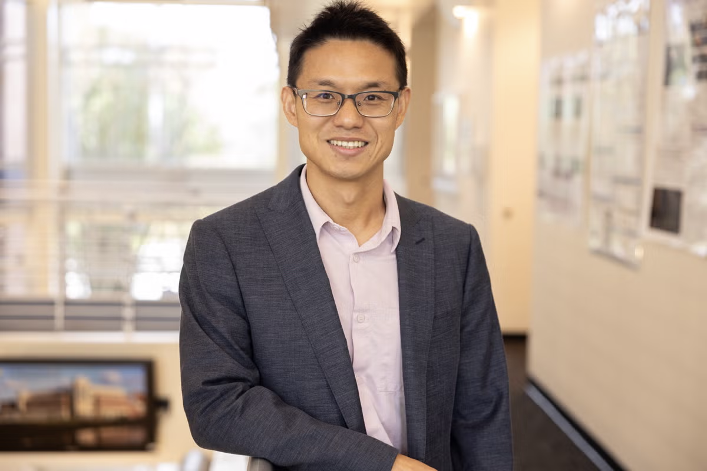
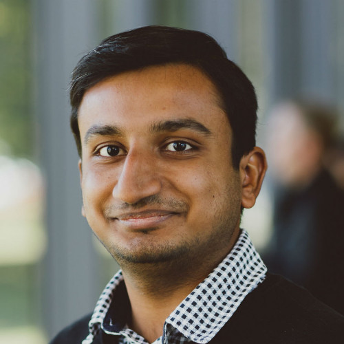
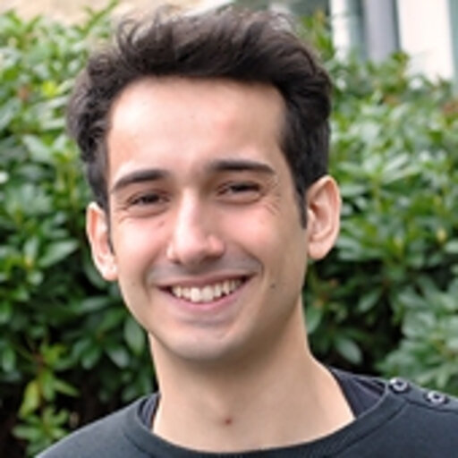
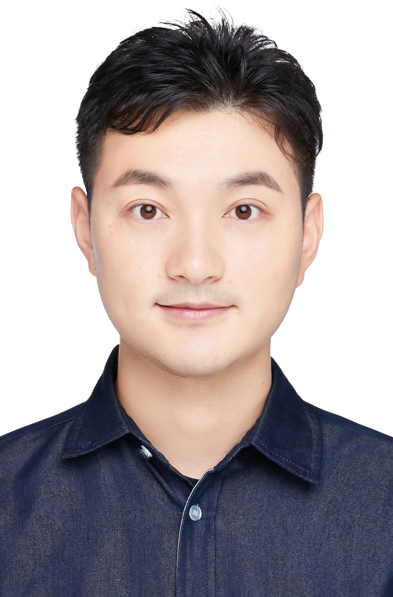

LaCross
Workshop on ground–aerial cross-view perspective in computer vision.
Seattle, USA · June 2027 · Workshop date and room to be announced
Ground–aerial cross-view perspective.
The same place can look substantially different from the ground, a drone, an aircraft, or a satellite. Connecting these views is important for scene understanding, 3D reconstruction, view synthesis, localization, and robotic collaboration.
LaCross is the first CVPR workshop focused on ground–aerial cross-view perspective. It brings together work in geometry, learning, generation, and real-world systems. The workshop also includes a cross-view localization competition based on OpenCVL.
Topics of interest
Cross-view localization challenge
The LaCross competition will be open to everyone and based on the OpenCVL benchmark.
OpenCVL benchmark ↗Call for Papers
We invite original research on cross-view computer vision and related applications. Submission instructions and the full timeline will be released soon.
Submission information is forthcoming. Paper format, proceedings information, submission portal, review policy, and deadlines will be added once confirmed.
Speakers

Yuanbo Xiangli ↗
Shanghai Jiao Tong University

Chen Chen ↗
University of Central Florida

Paul-Edouard Sarlin ↗

Junsheng Fu
Zenseact

Nathan Jacobs
University of Washington
Organizers

Mubariz Zaffar ↗
TU Delft
Zimin Xia
SUSTech
Junsheng Fu
Zenseact

Gabriel R. de Campos
Zenseact

Ewoud Smeur
TU Delft

Julian Kooij ↗
TU Delft

Yujiao Shi ↗
ShanghaiTech University

Li Mi
ETH Zurich

Yan Xia
University of Science and Technology
Schedule
To be announced
The workshop program, room assignment, paper sessions, and invited-talk timing will be published here after confirmation.